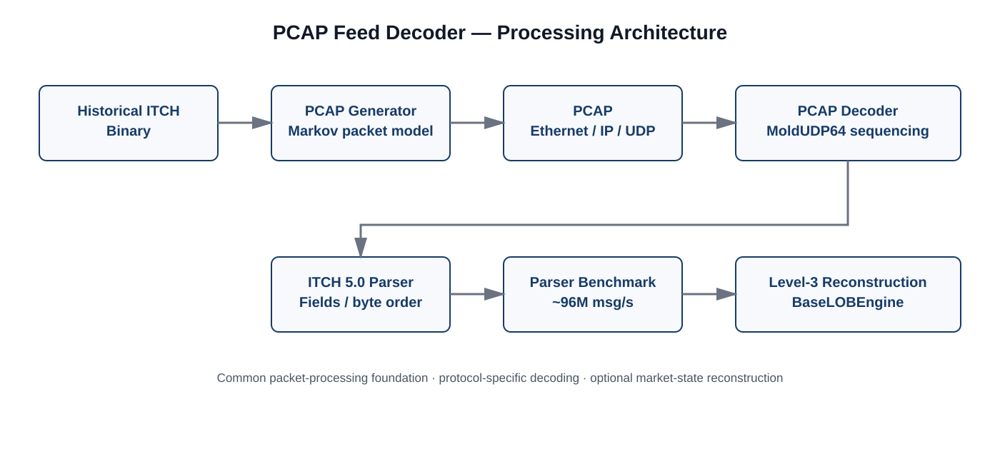

~96.0M
ITCH messages / s
Complete-feed decoding
Research infrastructure
Packet-level decoding and Level-3 reconstruction infrastructure for NASDAQ TotalView-ITCH 5.0.
PCAP Feed Decoder is a market-data processing system for working from captured network traffic to decoded exchange messages and reconstructed Level-3 order-book state.
The current implementation targets NASDAQ TotalView-ITCH 5.0 and covers packet-capture ingestion, MoldUDP64 session and sequence handling, ITCH message decoding, packet-level benchmarking, and Level-3 reconstruction.
The decoder can be used directly with an existing ITCH PCAP. An included pcap_generator is provided for cases where only the publicly available historical ITCH binary data is available.
The project is an independent infrastructure developed and owned by Pankaj Jat, utilized by XAD (Microstructure Automata Dynamics) under an AGPL-3.0 licensing framework for market microstructure and deterministic simulation.
Working with NASDAQ TotalView-ITCH 5.0 packet captures requires handling the complete path from network packets to exchange-level market state. This involves packet ingestion, MoldUDP64 session and sequence management, ITCH message extraction and decoding, and ultimately applying the decoded events to maintain the limit order book.
PCAP Feed Decoder provides this processing infrastructure directly for captured NASDAQ ITCH 5.0 traffic.
The decoder processes existing PCAP files and supports Level-3 order-book reconstruction directly in memory across the instruments present in the feed. Rather than requiring users to first extract and persist a separate normalized ITCH dataset before reconstructing market state, the captured feed can be processed directly through the decoding and reconstruction pipeline.
This can be particularly useful in research and engineering environments where retaining the original packet captures is important, but maintaining an additional, potentially large normalized dataset is impractical or unnecessary. Users can work from their existing captures and maintain the reconstructed order books in memory, without introducing another persistent copy of the feed solely as an intermediate processing step.
The infrastructure is intended for researchers and engineering teams working with exchange packet captures, including academic research groups and industry practitioners who need to decode and reconstruct market state without building the entire packet-processing pipeline themselves.
The current implementation provides three primary capabilities:
The decoder is specifically intended for packet captures. Researchers who already have length-prefixed historical ITCH binary data and only need to parse that representation can use a parser designed for that input directly; converting such data into PCAP solely to use this project is generally unnecessary.
The repository also includes an optional PCAP generator. It was developed to provide reproducible packet-capture inputs for testing and benchmarking because original NASDAQ ITCH PCAP data was not available during the initial development of the decoder. It constructs network framing around real historical ITCH messages, allowing the packet-processing implementation to be evaluated without requiring access to an original capture.

The processing path is deliberately layered. Captured packets are processed to extract their MoldUDP64 payloads, after which session sequencing and ITCH record extraction take place. Decoded messages can terminate at the parser benchmark or continue into one of the Level-3 reconstruction paths.
The decoder also contains bounded out-of-order handling. Packets ahead of the expected sequence are temporarily retained and processed when the missing sequence becomes available. Packets that arrive too late, or cannot be retained within the configured buffering window, are counted as out-of-order drops.
Measured on a 15M-packet workload
190,907,472 ITCH messages · ~7 GB PCAP · all active symbols
Latency is measured once per packet, from the beginning of packet processing through completion of that packet. The reported P50/P95/P99 values therefore describe full packet-processing latency, not per-ITCH-message latency.
The parser benchmark decodes the complete feed without invoking Level-3 book updates. This isolates packet handling and ITCH message decoding from the substantially more expensive order-book update path.
| Packets | 15,000,000 |
|---|---|
| Capture size | ~7 GB |
| ITCH messages | 190,907,472 |
| Packet throughput | ~7.54M packets/s |
| ITCH throughput | ~96.0M messages/s |
| P50 / P95 / P99 | 40 ns / 291 ns / 451 ns |
Repeated runs on the same capture produced approximately 94–96 million ITCH messages/s.
A compile-time stock-locate filter isolates one instrument after the stock locate has been decoded while the complete PCAP continues to be traversed. For this benchmark capture, stock locate 398 corresponds to AMZN.
| Packets traversed | 15,000,000 |
|---|---|
| Selected ITCH messages | 254,926 |
| Selected-message throughput | ~215,785 messages/s |
| Packet throughput | ~12.70M packets/s |
| P50 / P95 / P99 | 20 ns / 100 ns / 250 ns |
The same stock filter can be combined with Level-3 reconstruction. Only the selected instrument's decoded messages are passed into the reconstruction path, while the packet stream itself is still traversed in full.
| Packets traversed | 15,000,000 |
|---|---|
| Selected ITCH messages | 254,926 |
| Selected-message throughput | ~187,146 messages/s |
| Packet throughput | ~11.01M packets/s |
| P50 / P95 / P99 | 20 ns / 91 ns / 652 ns |
The full reconstruction workload maintains Level-3 order books across 5,000+ active symbols while consuming the complete feed. It is a substantially heavier workload because order-level state is maintained for thousands of books.
| Packets | 15,000,000 |
|---|---|
| ITCH messages | 190,907,472 |
| Packet throughput | ~438,947 packets/s |
| ITCH throughput | ~5.59M messages/s |
| P50 / P95 / P99 | 592 ns / 9.06 µs / 11.25 µs |
The decoder provides two Level-3 reconstruction paths over the same decoded ITCH feed and the same underlying BaseLOBEngine.
Decoded ITCH messages are applied directly through the engine's itch_* interfaces. This keeps the parser-to-book path direct.
Decoded messages are converted into the internal Event representation and replayed through reconstruct_market_state(). This path can maintain LobState fields for derived market-state statistics.
MEASURE_PARSER_LATENCY still performs packet processing, ITCH message extraction, field decoding, and byte-order conversion, but skips Level-3 book updates. MEASURE_RECON_LATENCY measures the corresponding decoding and reconstruction path with book updates enabled.
The repository includes an optional PCAP generator developed to create reproducible packet-capture workloads for testing and benchmarking. Original NASDAQ ITCH packet captures were not available during the initial development and performance evaluation, so the generator constructs network framing around real historical ITCH messages obtained from publicly available length-prefixed data.
The generator constructs Ethernet, IPv4, UDP and MoldUDP64 framing around the original length-prefixed NASDAQ ITCH messages. The market-data records come directly from the public historical source; the packet boundaries and network headers are constructed by the generator.
The generated PCAP is synthetic at the packet-framing level, not at the market-data level.
This makes the generator a reproducible input-generation utility rather than a requirement of the decoder. If an actual NASDAQ ITCH PCAP is already available, it can be passed directly to pcap_decoder.
The initial generator packed messages until the 1500-byte IP MTU was reached. That produced valid packets but made the distribution heavily concentrated near the maximum size. The current generator instead varies packet-size boundaries with a three-state Markov process, introducing both size variation and temporal clustering.
| State | Packet boundary | Approx. records |
|---|---|---|
| Quiet | 114 or 166 bytes | 1–2 messages |
| Mid | 218–582 bytes | 3–10 messages |
| Burst | 1514 bytes | Up to MTU |
The target long-run state distribution is 60% Quiet / 20% Mid / 20% Burst.
| From / To | Quiet | Mid | Burst |
|---|---|---|---|
| Quiet | 0.80 | 0.18 | 0.02 |
| Mid | 0.56 | 0.28 | 0.16 |
| Burst | 0.04 | 0.18 | 0.78 |
The transition matrix gives packet sizes temporal persistence rather than choosing independent random weights for each packet. It was derived from the target state frequencies using the stationary-distribution relationship of the Markov chain, with persistence selected to produce clustered periods of similar packet sizes. The implementation represents probabilities on a 16-bit integer scale and uses a lightweight WyRand-based generator for state transitions and packet-size selection.
The packet-size boundaries follow the framing used by the generator. Ethernet, IPv4, UDP, and MoldUDP64 contribute 62 bytes of network overhead. A maximum-size ITCH message is 50 bytes and its 2-byte length prefix makes the maximum record 52 bytes. This gives the 114-byte one-message boundary and the subsequent 52-byte increments used by the generator.
Quiet packets use 114 or 166 bytes. Mid packets range from 218 through 582 bytes in 52-byte increments. Burst packets use 1514 bytes, corresponding to a 1500-byte IP MTU plus the 14-byte Ethernet header. The generator then packs actual ITCH records until the selected boundary is reached or the next message would exceed it.
The generator models packet-size variation and clustering. It does not attempt to reproduce the exact packet boundaries of a historical exchange capture, and it does not currently inject packet loss or out-of-order sequences. The decoder's bounded sequence buffering can be exercised by a future generator extension that deliberately introduces gaps or reordering.
The packet-size model is motivated by published measurements showing that market-data packet-size distributions vary by exchange and that averages alone do not capture the range of packet sizes present in real feeds.
itch_* interfaces or through the Event / reconstruct_market_state() path.
The project is intentionally build-system-light. The decoder can be compiled directly with a C++23 compiler.
git clone --recursive https://github.com/pankajj6/pcap_feed_decoder.git
cd pcap_feed_decoderg++ -std=c++23 -O3 \
-Ibase_lob_engine \
-Iinclude \
src/pcap_decoder.cpp \
-o pcap_decoder
./pcap_decoder data/generated/01302020.pcapg++ -std=c++23 -O3 \
-DMEASURE_PARSER_LATENCY \
-Ibase_lob_engine \
-Iinclude \
src/pcap_decoder.cpp \
-o parser_bench
./parser_bench data/generated/01302020.pcapg++ -std=c++23 -O3 \
-DMEASURE_PARSER_LATENCY \
-DSPECIFIC_STOCK_LOCATE=398 \
-Ibase_lob_engine \
-Iinclude \
src/pcap_decoder.cpp \
-o parser_bench
./parser_bench data/generated/01302020.pcapg++ -std=c++23 -O2 \
-DMEASURE_RECON_LATENCY \
-DSPECIFIC_STOCK_LOCATE=398 \
-Ibase_lob_engine \
-Iinclude \
src/pcap_decoder.cpp \
-o recon_bench
./recon_bench data/generated/01302020.pcapg++ -std=c++23 -O3 \
-DMEASURE_RECON_LATENCY \
-Ibase_lob_engine \
-Iinclude \
src/pcap_decoder.cpp \
-o recon_bench
./recon_bench data/generated/01302020.pcapg++ -std=c++23 -O3 \
-Iinclude \
src/pcap_generator.cpp \
-o pcap_generator
./pcap_generator \
data/input/01302020.NASDAQ_ITCH50 \
data/generated/01302020.pcapThe generator also accepts an optional packet limit:
./pcap_generator \
data/input/01302020.NASDAQ_ITCH50 \
data/generated/01302020.pcap \
1000000pcap_feed_decoder/
├── base_lob_engine/ Git submodule
├── data/
│ ├── input/ NASDAQ ITCH binary input
│ └── generated/ Generated PCAP files
├── include/
│ ├── itch_packet_processor.h
│ └── nasdaq_itch50.h
├── src/
│ ├── pcap_decoder.cpp
│ └── pcap_generator.cpp
├── .gitignore
├── .gitmodules
└── README.mdThe base_lob_engine directory is maintained as a separate repository and included here as a Git submodule.
itch_* interfacesreconstruct_market_state()LobState support for derived market-state statisticsSPECIFIC_STOCK_LOCATEThe current generator models packet-size variation and clustering. It does not reproduce the exact packet boundaries of a historical capture and does not currently inject packet loss or out-of-order sequences.
The current implementation provides a direct processing path from captured NASDAQ ITCH network traffic to Level-3 market-state reconstruction. It handles packet ingestion, session sequencing, message decoding and continuous order-book maintenance, allowing researchers to work directly from PCAP files.
Because the Level-3 order book is already reconstructed and maintained within the processing pipeline, researchers can build their own market-microstructure analysis and feature-extraction logic directly on top of the existing codebase. This allows them to work with reconstructed order-book state without independently implementing the underlying packet parsing, message decoding and order-book maintenance machinery. The existing interfaces and codebase provide a foundation that can be explored and extended for custom research requirements.
This direct processing approach also provides an alternative for researchers working under storage constraints, or for workflows where persisting an intermediate normalized ITCH dataset would introduce additional storage overhead. They can process the original PCAP captures and develop their research logic directly within the reconstruction pipeline, without first generating and storing a separate normalized message dataset.
Future extensions will broaden the available output interfaces. One planned direction is the ability to write decoded and normalized ITCH message streams to persistent files, supporting reusable research datasets, downstream feature extraction and independent reconstruction workflows.
Planned future output: Normalized ITCH messages → persistent research datasets and independent downstream processing.